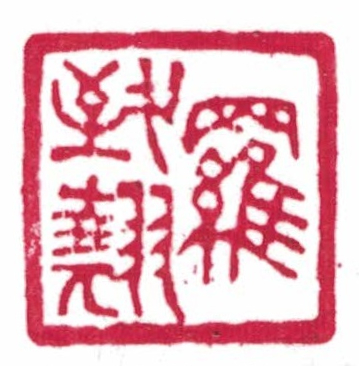
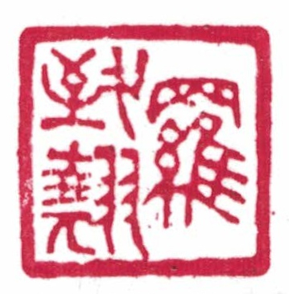

翹翹錯薪、言刈其楚。 --【詩經．國風．周南．漢廣】
About me
 
My name is 羅致翹 (Cantonese:
| Jyutping: lo4 zi3 kiu4
| IPA: /lɔː˨˩/ /tsiː˧/ /kʰiːu˨˩/).
"羅" is my family name. "致" means "becoming" and "翹" means "the topmost; the best". My father wishes me to strive for the best in my life.
On the left, it is my name seal carved in seal script.

My name is 羅致翹 (Cantonese:
| Jyutping: lo4 zi3 kiu4
| IPA: /lɔː˨˩/ /tsiː˧/ /kʰiːu˨˩/).
"羅" is my family name. "致" means "becoming" and "翹" means "the topmost; the best". My father wishes me to strive for the best in my life.
On the left, it is my name seal carved in seal script.
For those who do not speak Cantonese or for simplicity, you can call me Jackie.
The English transliteration of my name in academic publications is LO, Chi-kiu.
Since 2023, I have been publishing alongside with the Chinese characters with my name. When author names in non-Latin languges are transliterated into English, ambiguity is introduced due to the fact that 1) Latin scripts do not handle tones in tonal languages and 2) there are languages with more homonyms. The huge number of issues in ACL anthology related to author name crashing is the evidence for the extent of the problem. Some publication venues in other fields of science have already made it into their official policy to include author names in their original scripts. For example, American Physical Society. It would be embarrassing that *ACL and relative conferences are not among the pioneers in doing that. Therefore, I advocate for ACL allowing all authors publishing with their names in the original script along side with their transliterated name for both equity and efficiency.
Gender pronoun: all/any. Pronouns in Cantonese are ungendered. Thus, I feel comfortable with being referred to using any gender pronoun in any language.
Contact Info
Email: chikiu.<Familyname>@nrc-cnrc.gc.ca; chikiu.<Familyname>@gmail.com
Web: https://chikiu-jackie-lo.org
Github: https://github.com/chikiulo
Phone: +1 613 993 5205 (office)
Address: M-50, 1200 Montreal Road, Ottawa, ON, Canada, K1A 0R6.
Bio
Dr. Chi-kiu (Jackie) Lo is a senior research officer in the multilingual text processing team of the National Research Council Canada (NRC-CNRC). Dr. Lo received a Doctor of Philosophy (PhD) degree in Computer Science and Engineering (CSE) from the Hong Kong University of Science and Technology (HKUST).
Born and raised in Hong Kong as a trilingual, Jackie speaks native Cantonese, fluent English and Mandarin and begins learning French recently. Jackie's research interest is multilingual natural language processing with particular focus on semantics in machine translation (MT), its quality evaluation and estimation. Jackie is the designer of a unified semantic MT quality evaluation and estimation metric, YiSi. YiSi is one of the top performing metrics at the metrics shared tasks of the Conference on Machine Translation (WMT) in recent years. Jackie was awarded the Rising Star in the Digital Technologies Research Center of the NRC-CNRC in 2018. Jackie served as the co-chair for the diversity and inclusion committee in EMNLP 2019 and NAACL 2025, the area co-chair for machine translation in ACL 2020, COLING 2022, ACL 2023 and the organizing committee member for the WMT Metrics shared task since 2021.